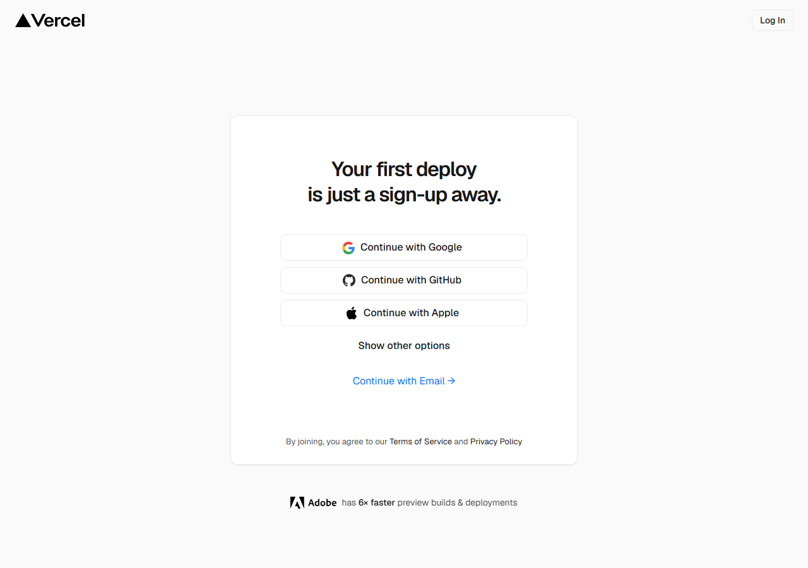

МАСТЕР-ИИ
Урок 5 · Профессиональный подход
Многостраничный
сайт через Claude Code
От подготовки среды до публикации настоящего бизнес-сайта — с ТЗ, reverse-инжинирингом и скиллами
МАСТЕР-ИИ
Урок 5
В этом уроке
Что вы узнаете
01
Подготовить рабочую среду: VPN, папка, Trust, режим
02
Reverse-инжиниринг — пусть Claude предлагает, вы одобряете
03
Создать файл ТЗ и запустить многостраничный сайт одним промптом
МАСТЕР-ИИ
Урок 5
01
Часть первая
Подготовка рабочей среды
Чек-лист перед стартом любого серьёзного проекта
МАСТЕР-ИИ
Урок 5
Чек-лист перед стартом
01
Включить AmneziaVPNОранжевый кружок → проверить IP на 2ip.ru
02
Создать папку проектаНа рабочем столе, имя латинскими буквами без пробелов
03
Открыть Claude Code → Open Folder → TrustБез Trust Claude не сможет создавать файлы
04
Правило: 1 проект = 1 папкаНе смешивать разные проекты — потеряется контекст
МАСТЕР-ИИ
Урок 5
02
Часть вторая
Reverse-инжиниринг
Пусть Claude думает за вас — вы только одобряете решение
МАСТЕР-ИИ
Урок 5
Принцип: не объяснять —
просить предложить
| Ситуация | Что делать |
|---|
| Не знаете, что писать в ТЗ | Попросите Claude проанализировать нишу |
| Не знаете, какие скиллы нужны | «Какие скиллы нужны для 3D-анимации?» |
| Не нравится дизайн | Опишите что не нравится — Claude предложит план |
| Есть вопрос по настройке | Спросите Claude — точнее, чем Google |
МАСТЕР-ИИ
Урок 5
03
Часть третья
Структура промпта
6 компонентов — чем подробнее, тем точнее результат
МАСТЕР-ИИ
Урок 5
6 компонентов промпта
Роль
Кем выступает Claude: дизайнер, эксперт, аналитик
Контекст
Кто вы, что делаете, для кого проект
Задача
Чётко: что именно нужно создать
Формат
HTML, PDF, таблица — в каком виде результат
Ограничения
Чего нельзя делать, каких элементов избегать
Пример
Ссылка-референс или описание стиля
МАСТЕР-ИИ
Урок 5
04
Часть четвёртая
Файл ТЗ и многостраничный сайт
Один утверждённый документ → один промпт → готовый сайт
МАСТЕР-ИИ
Урок 5
5 шагов создания сайта
01
Создать файл идеи проектаClaude анализирует нишу и предлагает структуру
02
Утвердить ТЗВнести правки, добавить требования к дизайну
03
Запустить в Bypass-режиме«По нашему файлу @идея создай весь сайт»
04
Проверить результатОтметить что нравится и что нужно доработать
05
Доработать дизайн через скиллы3D, анимации, типографика — один запрос
МАСТЕР-ИИ
Урок 5
Публикация на Vercel

vercel.com → Sign Up → «Continue with Google». Дальше New Project → Import → Deploy
МАСТЕР-ИИ
Урок 5
Модели и режимы работы
| Режим | Когда использовать |
|---|
| Ask Permission | Новые задачи — Claude спрашивает перед каждым шагом |
| Plan Mode | ТЗ ещё не готово — Claude задаёт уточняющие вопросы |
| Bypass | ТЗ согласовано — Claude действует самостоятельно |
60%
токенов Pro на большой сайт за одну сессию
5 ч
обновление лимита токенов — планируйте работу
МАСТЕР-ИИ
Урок 5
Запомните главное
Ключевые выводы
- Всегда создавайте файл ТЗ — он заменяет Memory и не тратит токены
- Reverse-инжиниринг: задайте направление, Claude предложит структуру
- Bypass-режим + готовое ТЗ = многостраничный сайт за 30 минут
МАСТЕР-ИИ
Следующий урок
Урок 6:
Агенты и контент
Как перестать объяснять Claude кто вы каждый раз и выстроить систему персональных агентов
Следующий урок →